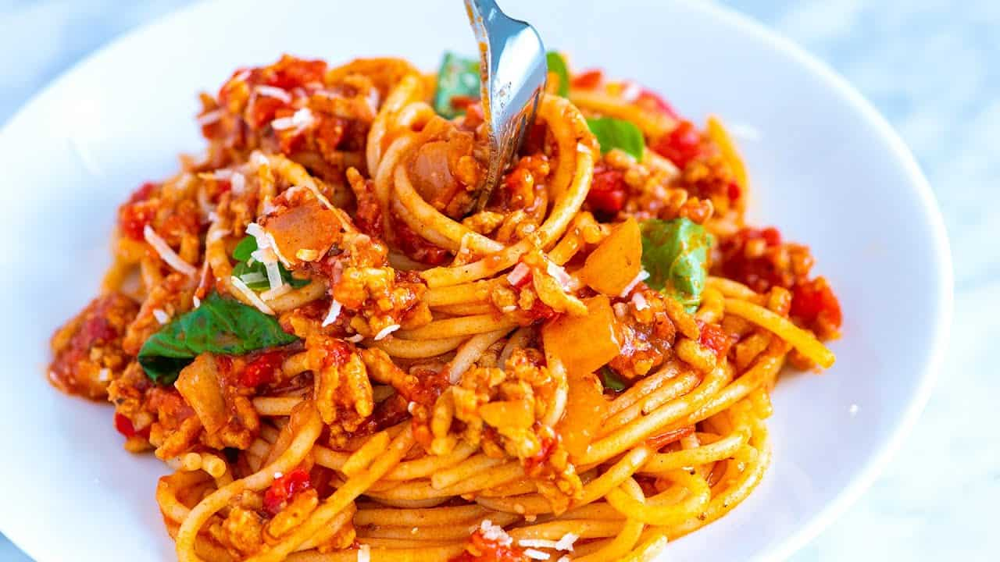

Spaghetti

Welcome to the Spaghetti Circus!
Get ready to twirl your forks, unleash your inner Italian chef, and prepare for a pasta-tively hilarious cooking adventure.
In this Spaghetti Spectacle, we'll show you how to turn a seemingly ordinary pasta into a dish that will make your taste buds do a standing ovation.
- Prep Time: 10 min
- Cook Time: 1h 5 mins
- Total Time: 1h 15mins
- Servings: 8
Ingredients
- 1 pound ground beef
- 1 medium onion, chopped
- 4 cloves garlic, minced
- 1 small green bell pepper, diced
- 1 (28 ounce) can diced tomatoes
- 1 (16 ounce) can tomato sauce
- 1 (6 ounce) can tomato paste
- 2 teaspoons dried oregano
- 2 teaspoons dried basil
- 1 teaspoon salt
- ½ teaspoon ground black pepper
Steps
- Gather all ingredients.
- Combine ground beef, onion, garlic, and green pepper in a large saucepan over medium-high heat.
Cook and stir until meat is browned and crumbly and vegetables are tender, 5 to 7 minutes. Drain grease.<
- Stir diced tomatoes, tomato sauce, and tomato paste into the pan. Season with oregano, basil, salt, and pepper.
Simmer spaghetti sauce for 1 hour, stirring occasionally.
- Serve hot and enjoy!
Source
Recipe
Spaghetti photo